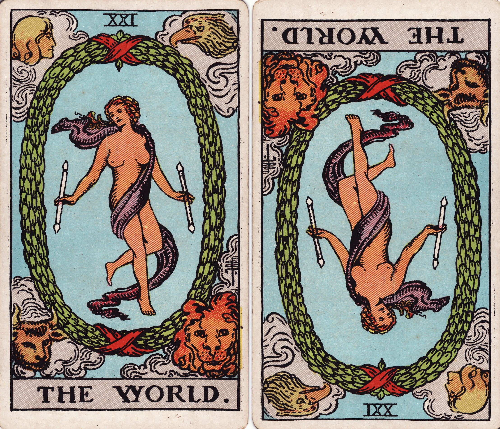

⬆️⬇️ Upright & Reversed: Understanding Card Positions
One of the most misunderstood parts of Tarot is what happens when a card appears upside down. Many beginners fear that reversed means something negative or bad — but in truth, it simply adds depth, nuance and balance to the message. Both positions are equally meaningful and necessary for a complete reading.

Upright Cards
When a card appears upright, its energy flows clearly and freely. Its core qualities, lessons and meanings are fully present and active in your life right now. The message is direct, visible and easy to recognize. For example, The Sun upright speaks of joy, clarity and vitality openly expressed; The Hermit upright invites you to seek wisdom and quiet reflection with confidence.
Reversed Cards
Reversed cards do not cancel the upright meaning — they show another side of it. Common interpretations include:
- Emerging energy: the quality is growing, developing or not yet fully visible;
- Blockage or delay: something is slowing, hiding or preventing that energy from flowing freely;
- Excess or lack: you may be expressing that trait too strongly, or not enough;
- Inner work: the lesson is happening inside you, not yet showing in external events;
- Shadow meaning: revealing what is hidden, unacknowledged or waiting to be seen.
For example, The Star reversed is not “hope lost” — it may mean you are doubting yourself, or that faith and clarity are slowly returning after a hard time. The Emperor reversed is not “total failure” — it may signal imbalance in authority, too much control or a lack of structure you need to build.
Always remember: reversed cards are gentle guides. They ask you to look deeper, find balance and take what you need from the message — never to fear it.